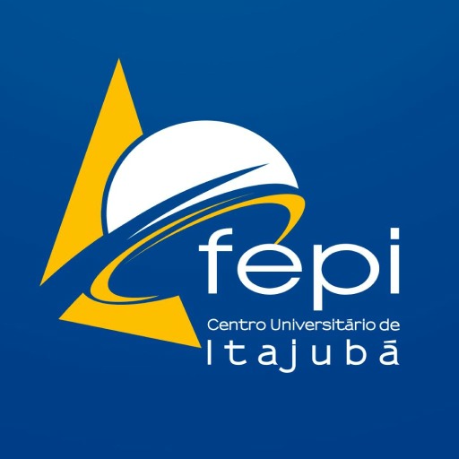
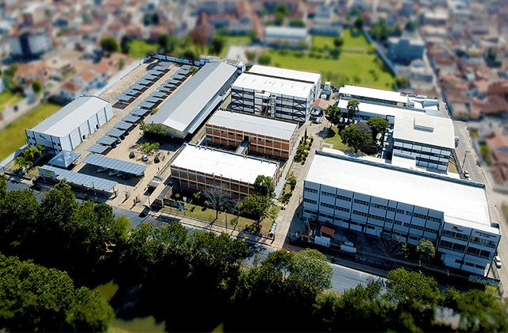

Uma semana dedicada à tecnologia, inovação e desenvolvimento profissional.
Garantir minha vagaDias de Evento
Horas complementares
Especialistas Convidados
Participantes Esperados
Semana multidisciplinar dos cursos de Sistemas de Informação e Análise e Desenvolvimento de Sistemas da FEPI.
Participe de palestras, workshops e atividades práticas com especialistas da área, ampliando seu networking e vivenciando desafios reais do mercado de tecnologia.
23 a 27 de Novembro de 2026

O evento acontece no Campus FEPI Itajubá - estrutura completa com laboratórios de tecnologia.
BLOCO 400 · LAB DE TECNOLOGIA - LTIAvenida Dr. Antônio Braga Filho, 687 - Porto Velho (ou Varginha), Itajubá - MG
Garanta sua participação na Semana da Tecnologia FEPI 2026 e receba até 20 horas complementares.
Quero me inscreverEvento gratuito para alunos regularmente matriculados na instituição.
Tire suas dúvidas sobre a Semana da Tecnologia FEPI 2026.
A Semana da Tecnologia FEPI 2026 é destinada a estudantes, professores e interessados na área de tecnologia.
Sim. Os participantes receberão certificado de participação mediante presença nas atividades.
O evento poderá gerar até 20 horas complementares, de acordo com a participação e o controle de presença.
Não. O evento é gratuito para alunos regularmente matriculados na FEPI.
O evento será realizado no Campus FEPI, em Itajubá-MG, utilizando auditórios e laboratórios de tecnologia.
Sim. A inscrição é necessária para controle de participação e emissão dos certificados.